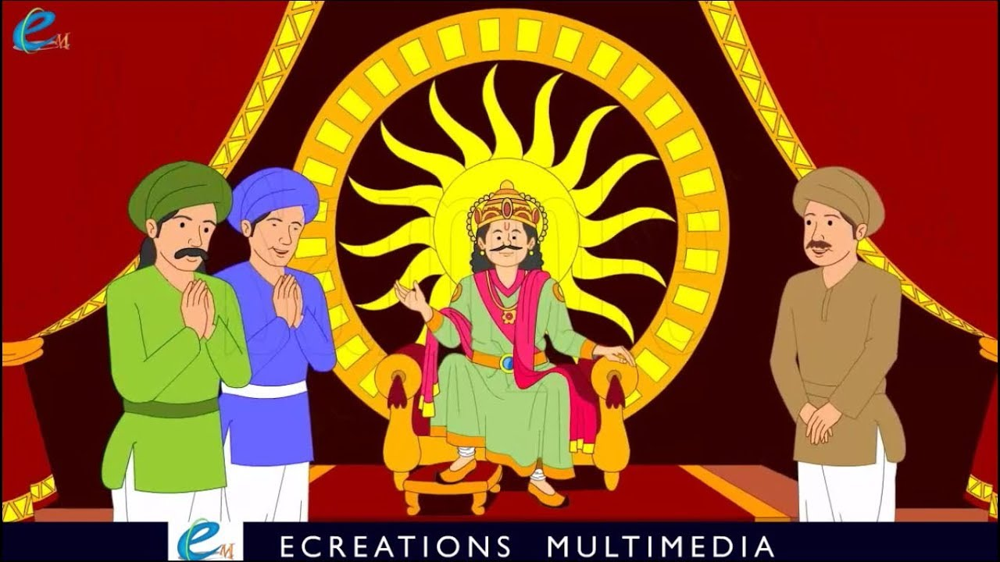

પરમાત્માએ કહ્યું, "હે રાજા! ચંપાપુર નામનું એક શહેર છે, જેનો રાજા ચંપકેશ્વર છે. અને રાણીનું નામ સુલોચના છે, અને પુત્રીનું નામ ત્રિભુવન સુંદરી છે. તે એક પ્રતિષ્ઠિત-સુંદર સ્ત્રી છે, જેનું મુખ ચંદ્ર જેવું છે, કાળા વાદળો જેવા વાળ, ચપળ આંખો જેવી આંખો, ધનુષ્ય જેવી ભ્રમર (કમાનવાળી), પોપટની ચાંચ જેવી નાક, કબૂતર જેવી ગરદન, દાડમના દાણા જેવા દાંત; જેમના હોઠની લાલાશ હાથની જેમ દેખાય છે, ^ જેની કમર દીપડા જેવી, હાથ અને પગ કોમળ કમળ જેવા, રંગ ચંપા-પુષ્પ જેવો; ટૂંકમાં, તેની યુવાનીનું મોર દરરોજ વધતું જતું હતું."
જ્યારે તે લગ્ન કરવા યોગ્ય બની, ત્યારે રાજા અને રાણીના મનમાં ચિંતા થવા લાગી. અને વિવિધ દેશોના રાજાઓમાં (આજુબાજુ) સમાચાર ફેલાઈ ગયા કે રાજા ચંપકેશ્વરના મહેલમાં એક એવી સુંદર છોકરીનો જન્મ થયો છે કે તેની સુંદરતા જોઈને જ દેવો, પુરૂષો અને પવિત્ર ઋષિઓ મોહિત થઈ જાય છે. ત્યારપછી જુદા જુદા દેશોના રાજાઓએ દરેકને તેની સમાનતા દોરવી, અને તેને એક બ્રાહ્મણના હાથે રાજા ચંપકેશ્વરને મોકલી. રાજાએ તેની પુત્રીને તમામ રાજાઓના પોટ્રેટ પ્રાપ્ત કર્યા અને બતાવ્યા, પરંતુ તેમાંથી કોઈ પણ તેણીની ફેન્સીને અનુરૂપ ન હતું. ત્યારે રાજાએ મદદ કરી, 'તો પછી, તું જાહેરમાં પતિની પસંદગી કર.' આ માટે પણ તે સંમત ન થઈ, પણ તેના પિતાને કહ્યું, 'બાપા! સુંદરતા, શક્તિ અને શ્રેષ્ઠ જ્ઞાનના ત્રણ ગુણો ધરાવનારને મને આપો.'
દંડમાં, જ્યારે ઘણા દિવસો વીતી ગયા, ત્યારે ચાર જુદા જુદા દેશોમાંથી ચાર સ્યુટર્સ આવ્યા. પછી રાજાએ તેઓને કહ્યું, 'તમારામાંના દરેક વ્યક્તિ પાસે જે શ્રેષ્ઠ ગુણો અને જ્ઞાન છે, તે સ્પષ્ટપણે મારી સમક્ષ રજૂ કરો.' તેમાંથી એકે કહ્યું, 'મારી પાસે એટલું જ્ઞાન છે કે હું કાપડ બનાવીને પાંચ રૂબીમાં વેચું છું. જ્યારે મને કિંમત સમજાય છે, ત્યારે હું એક માણેક બ્રાહ્મણોને આપું છું, બીજો હું દેવતાઓને અર્પણ કરું છું, ત્રીજો હું મારી પોતાની વ્યક્તિ પર પહેરું છું, ચોથો હું મારી પત્ની માટે રાખું છું, પાંચમો હું વેચું છું, અને સતત જેથી મેળવેલા પૈસાથી મારી જાતને ટેકો આપો. આ જ્ઞાન બીજા કોઈ પાસે નથી. અને મારી પાસે જે સારા દેખાવ છે, તે જોવા માટે ખુલ્લા છે.' બીજાએ કહ્યું, 'હું જમીન અને જળચર પ્રાણીઓ અને પક્ષીઓ બંનેની ભાષાઓથી પરિચિત છું; તાકાતમાં કોઈ સમાન નથી; અને મારી સુંદરતા તમારી સમક્ષ છે.' ત્રીજાએ કહ્યું, 'હું શીખી ગયેલા લખાણોને સારી રીતે સમજી શકું છું કે મારા જેવું કોઈ અસ્તિત્વમાં નથી; અને મારી સુંદરતા તમારી નજર સમક્ષ છે.' ચોથાએ કહ્યું, 'હું શસ્ત્રોના ઉપયોગના મારા જ્ઞાનમાં એકલો ઊભો છું;^ મારા જેવું કોઈ નથી; હું એક તીર મારી શકું છું જે એવી વસ્તુ પર પ્રહાર કરશે જે સાંભળવામાં આવે છે, પરંતુ દેખાતી નથી; અને મારી સુંદરતા વિશ્વમાં પ્રખ્યાત છે, તમે પણ તે ચોક્કસ જોશો.'
તે ચારેયના નિવેદનો સાંભળીને રાજા મનમાં વિચારવા લાગ્યો કે, 'ચારેય સર્વોત્તમ છે; હું છોકરીને કોને આપું? ' આમ વિચારીને, તે તેની પુત્રી પાસે ગયો અને તેમાંથી ચારેયના ગુણો રજૂ કર્યા અને કહ્યું, 'હું તને (લગ્નમાં) કોની સાથે આપીશ? ' આ સાંભળીને તેણીએ માથું નમાવી દીધું.
આટલી બધી વાર્તા સંભળાવ્યા પછી, સ્પ્રાઉટે કહ્યું, "હવે, રાજા વિક્રમ! તેમાંથી આ સ્ત્રી કોના માટે યોગ્ય છે?" રાજાએ જવાબ આપ્યો, "જે કાપડ બનાવે છે અને વેચે છે તે જાતિના આધારે શુદ્ર છે; અને જે ભાષા જાણતો હોય છે તે જાતિના આધારે બાયસ છે; જેણે વિદ્વાન લખાણોનો અભ્યાસ કર્યો છે તે બ્રાહ્મણ છે; અને જે કોઈ વસ્તુને તીરથી મારે છે તે બ્રાહ્મણ છે. જે ફક્ત સાંભળવામાં આવે છે, અને દેખાતી નથી, તે તેની જાતિની છે: સ્ત્રી તેના માટે યોગ્ય છે." આ શબ્દો સાંભળીને, સ્પ્રાઉટ ફરીથી ગયો અને તે ઝાડ પર લટકી ગયો; અને રાજા પણ ત્યાં ગયો, તેને બાંધ્યો, તેના ખભા પર બેસાડ્યો અને તેને લઈ ગયો.
| પેજ નંબર ૨૨ | ||